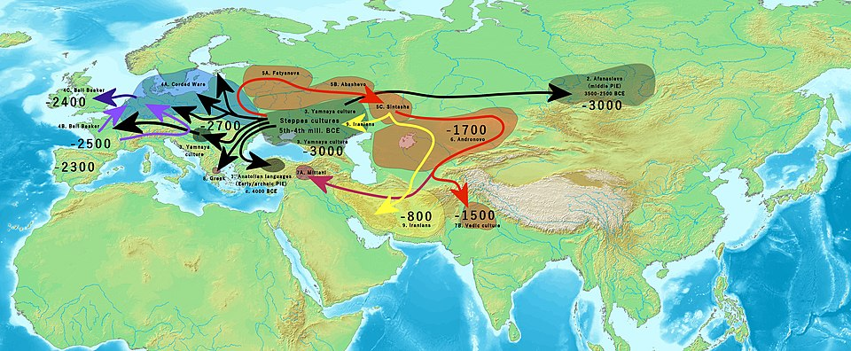

Proto-Indo-European
A reconstructed linguistic ancestor that connects 3 billion people today
Generated by openrouter/xiaomi/mimo-v2-pro · April 2, 2026

Sir William Jones, who discovered the Indo-European language family in 1786
What is Proto-Indo-European?
Proto-Indo-European (PIE) is the reconstructed common ancestor of the Indo-European language family, spoken by an estimated 3.4 billion native speakers worldwide today. No direct evidence of PIE exists—it left no written records.
Instead, linguists have painstakingly reconstructed it using the comparative method, analyzing hundreds of ancient and modern languages to work backwards to their shared progenitor. This reconstructed language represents one of the greatest intellectual achievements in the history of linguistics.
PIE is believed to have been spoken between approximately 4500–2500 BCE during the Late Neolithic to Early Bronze Age period.

Yamnaya kurgan burial mound in Hungary, characteristic of the Pontic-Caspian steppe culture
Discovery: How We Found Our Linguistic Ancestor
Sir William Jones (1786)
In 1786, the British philologist Sir William Jones, while serving as a judge in Bengal, delivered a lecture to the Asiatic Society that revolutionized linguistics. He observed that Sanskrit, Greek, and Latin shared "a stronger affinity" than could be attributed to chance, proposing they all sprang from "some common source, which, perhaps, no longer exists."
Jacob Grimm & Grimm's Law (1822)
Building on Jones's insights, the German philologist Jacob Grimm (of fairy tale fame) discovered systematic sound correspondences between Germanic languages and other Indo-European languages. Grimm's Law, published in his Deutsche Grammatik (1822), showed how consonants shifted predictably:
- PIE *p → Germanic f (Latin pater, English father)
- PIE *t → Germanic th (Latin tres, English three)
- PIE *k → Germanic h (Latin cornu, English horn)
Ferdinand de Saussure & the Laryngeal Theory (1878)
The Swiss linguist Ferdinand de Saussure, at just 20 years old, proposed the existence of mysterious "laryngeal" sounds in PIE that had disappeared in all known daughter languages but left traces in vowel patterns. This theoretical reconstruction was confirmed in 1906 when the Hittite language was deciphered, revealing actual laryngeal consonants.

Ferdinand de Saussure, whose laryngeal theory revolutionized PIE phonology
The Homeland Debate: Where Did PIE Originate?
Two major theories compete for PIE's geographic origin, with recent genetic evidence providing new clarity:
Steppe/Kurgan Hypothesis (Yamnaya)
The Steppe hypothesis, championed by archaeologist Marija Gimbutas, places the PIE homeland on the Pontic-Caspian steppe (modern Ukraine/southern Russia) around 4000 BCE. This theory identifies the Yamnaya culture (3300–2600 BCE) as early Indo-Europeans who spread across Europe and Asia through horse domestication and wagon technology.

Yamnaya metal artifacts demonstrating advanced Bronze Age technology
Anatolian Hypothesis
Proposed by British archaeologist Colin Renfrew, the Anatolian hypothesis suggests PIE originated in Neolithic Anatolia (modern Turkey) around 7000 BCE, spreading with agriculture rather than conquest.
2025 Harvard Ancient DNA Study
A landmark 2025 study from Harvard Medical School provided decisive support for the Steppe hypothesis. By analyzing ancient DNA from over 1,000 individuals, researchers found that Bronze Age Europeans inherited substantial ancestry from Yamnaya pastoralists, and linguistic analysis showed all Indo-European branches (except Anatolian) trace back to steppe populations.

Map showing Indo-European migrations from the Pontic-Caspian steppe
The Language Family Tree
PIE diversified into numerous branches, some extinct and some flourishing:

Present-day distribution of Indo-European languages
- Anatolian † (extinct: Hittite, Luwian)
- Indo-Iranian (Sanskrit, Persian, Hindi-Urdu, Bengali)
- Greek (Ancient and Modern Greek)
- Italic/Romance (Latin, Spanish, French, Italian, Portuguese, Romanian)
- Celtic (Irish, Welsh - historically Gaulish)
- Germanic (English, German, Dutch, Swedish, Norwegian, Danish)
- Balto-Slavic (Lithuanian, Latvian, Russian, Polish, Czech)
- Albanian (Albanian)
- Armenian (Armenian)
- Tocharian † (extinct: Tocharian A & B)
PIE Language Structure
PIE was a highly sophisticated language with features that persist in many of its daughter languages:
Grammar
- Highly inflected: Eight grammatical cases (nominative, accusative, genitive, dative, ablative, locative, instrumental, vocative)
- Three genders: Masculine, feminine, neuter
- Three numbers: Singular, dual, plural
- Word order: Typically Subject-Object-Verb (SOV)
Phonology & Morphology
- Ablaut system: Vowel alterations to indicate grammatical function (e.g., *sng- → *song- in English)
- Complex verb conjugations: Multiple tenses, moods, and voices
- Extensive use of affixes: Prefixes, suffixes, and infixes to modify meaning
Reconstructed Words & Living Cognates
By comparing daughter languages, linguists have reconstructed numerous PIE words. The asterisk (*) indicates reconstruction:
- *p?-t?r → English father, Latin pater, Greek pat?r, Sanskrit pit??
- *m?t?r → English mother, Latin mater, Greek m?t?r, Sanskrit m?t??
- *wódr̥ → English water, German Wasser, Russian voda, Greek húd?r
- *h?n?r → English one, Latin ?nus, Greek he?s, Sanskrit eka
- *tréyes → English three, Latin tr?s, Greek tre?s, Sanskrit tráya?
- *k?rd- → English heart, Latin cor, Greek kardía, Sanskrit h?daya
- *dy?ws → Greek Zeus, Latin Jupiter (Ju-piter), Sanskrit Dyaus
Why PIE Matters Today
Proto-Indo-European research remains vital for several reasons:
- Historical linguistics foundation: PIE reconstruction established the scientific methodology used to study all language families
- Cultural reconstruction: By analyzing shared vocabulary, we can infer PIE speakers had words for wheels, horses, cows, and patriarchal social structures
- Understanding diversity: PIE studies reveal how languages evolve and diversify over millennia
- Genetic ancestry: Modern DNA studies trace population movements during the Bronze Age, correlating with linguistic spread
- Modern language learning: Understanding PIE roots helps explain irregularities in modern languages and aids vocabulary acquisition
- Digital age applications: Computational linguistics and machine learning models use historical linguistic principles pioneered in PIE research
From everyday words like mother and father to mythological figures like Zeus and Jupiter, traces of this ancient language surround us daily, connecting speakers of languages as diverse as Hindi, Icelandic, and Armenian to a shared linguistic heritage.
Image Sources
- Sir William Jones: Portrait by Joshua Reynolds, Yale Center for British Art (Wikimedia Commons)
- Ferdinand de Saussure: Public domain portrait (Wikimedia Commons)
- Yamnaya kurgan: Wikimedia Commons, author: Laszlo78
- Yamnaya metal artifacts: Wikimedia Commons
- Indo-European migrations: Wikimedia Commons, Maximilian Dörrbecker
- Language distribution map: Wikimedia Commons, Hayden120
← Back to home